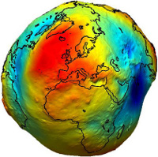

Python and GIS
Dharhas Pothina
TNRIS GeoRodeo - May 30th, 2014Why
lets back up a minute ...
Why Program?
What is wrong with ...
This?
well nothing actually ...
... until you hit a deadline
... and realize you made a mistake
... in one of the intermediate analysis steps
... three weeks ago
Because it is not a GIS tool
It is used in
- Web frameworks
- Data Visualization
- Image Processing
- Numerical Modeling
- Signal Processing
- Machine Learning
- Big Data
- Blah Blah Blah
Oh and also in GIS
Some Python GIS tools
- PyProj
- Fiona/Rasterio
- Shapely
- Arcpy
- PySAL
- QGIS
- Matplotlib/Basemap
- Cartopy
- Numpy/Scipy Ecosystem
PyProj (PROJ.4)
- generalized projection engine
- projections determined by: proj4 string or EPSG number
- UTM14
EPSG number: 32614 proj4 string: '+proj=utm +zone=14 +ellps=WGS84 +datum=WGS84 +units=m +no_defs' - http://spatialreference.org, http://www.epsg-registry.org/
Read csv data from url and project Travis County Cities to UTM14
"""
url - http://goo.gl/WFylXY
data format:
"zip_code","latitude","longitude","city","state","county"
"00501",40.922326,-72.637078,"Holtsville","NY","Suffolk"
"00544",40.922326,-72.637078,"Holtsville","NY","Suffolk"
...
"""
import pyproj
import pandas as pd
url = "http://goo.gl/WFylXY"
data = pd.read_csv(url)
travis_cities = data[data['county']=='Travis']
lons = travis_cities['longitude'].values
lats = travis_cities['latitude'].values
utm14 = pyproj.Proj("+init=EPSG:32614")
travis_cities['utm_x'], travis_cities['utm_y'] = utm14(lons, lats)
GDAL and OGR
fiona and rasterio

Standards are like toothbrushes, everybody agrees you should have one, but no one wants to use yours. — Joe Croser
import pandas as pd
from shapely.geometry import Point, mapping
from fiona import collection
schema = { 'geometry': 'Point', 'properties': { 'city': 'str', 'zip': 'str' } }
url = "http://goo.gl/WFylXY"
data = pd.read_csv(url)
with collection("zipcodes.shp", "w", "ESRI Shapefile", schema) as output:
for index, row in data.iterrows():
point = Point(row['longitude'], row['latitude'])
output.write({
'properties': {'city': row['city'], 'zip': row['zip_code']},
'geometry': mapping(point)
})
ftp://rockyftp.cr.usgs.gov/vdelivery/Datasets/Staged/NED/1/
print 'Downloading tiles needed for requested bounding box:'
raster_tiles = []
tiles = _tile_urls(layer, xmin, ymin, xmax, ymax)
for i, url in enumerate(tiles):
filename = os.path.split(url)[-1]
zip_path = os.path.join(path, layer_dict[layer], 'zip', filename)
print '... downloading tile %s of %s from %s' % (i+1, len(tiles), url)
util.download_if_new(url, zip_path, check_modified=True)
print '... ... zipfile saved at %s' % zip_path
tile_path = zip_path.replace('/zip', '')
raster_tiles.append(_extract_raster_from_zip(zip_path, tile_path))
print 'Mosaic and clip to bounding box extents'
tile_path = os.path.split(tile_path)[0]
print subprocess.check_output(['gdalbuildvrt', '-te', repr(xmin), repr(ymin), repr(xmax), repr(ymax), output_path] + raster_tiles)
return output_path
xmin, xmax, ymin, ymax = (-79.68433821243661, -77.42742156945509,
32.81417227179455, 34.998064728936754)
filename = get_raster('1 arc-second', xmin, ymin, xmax, ymax)
with rasterio.drivers():
with rasterio.open(fname) as src:
dem = src.read_band(1)
ndv = src.nodatavals
dem[dem==ndv] = np.nan
plt.imshow(dem)
plt.savefig('dem.png')
 |
 |

AEIDW - Anisotropic Eliptical Inverse Distance Weighting
Wean yourself from GUI reliance
Start Coding!
Questions?
dharhas@gmail.com